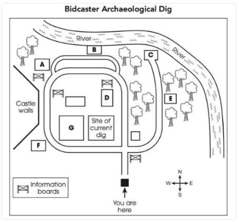

Cambridge IELTS 20
Time: approx. 30 minutes
Instructions
Digital recreation of Cambridge IELTS Listening Test 3.
Type answers in the gaps. Click options for multiple choice.
Print this page for paper-like practice.
Complete the table below. Write ONE WORD AND/OR A NUMBER for each answer.
| Name of companies | Information about costs | Additional notes |
|---|---|---|
Peak Rentals |
Prices range from 105 dollars to1dollars per room per month |
The furniture is very2Delivers in 1–2 daysSpecial offer: free3with every living room set |
4and Oliver |
Mid-range prices |
12% monthly fee for5Also offers a cleaning service |
Larch Furniture |
Offers cheapest prices for renting furniture and6items |
Must have own7Must have enough8Minimum contract length: six months |
8 Rentals |
See the9for the most up-to-date prices |
10are allowed within 7 days of delivery |
Questions 11–16: Choose A, B or C. Questions 17–20: Label the map A–G.

Questions 21–26: Choose A, B or C. Questions 27–30: Matching A–F.
Complete the notes below. Write ONE WORD ONLY for each answer.
IELTS Listening Test 3 • Cambridge IELTS 20 • Practice recreation (content from official PDF)